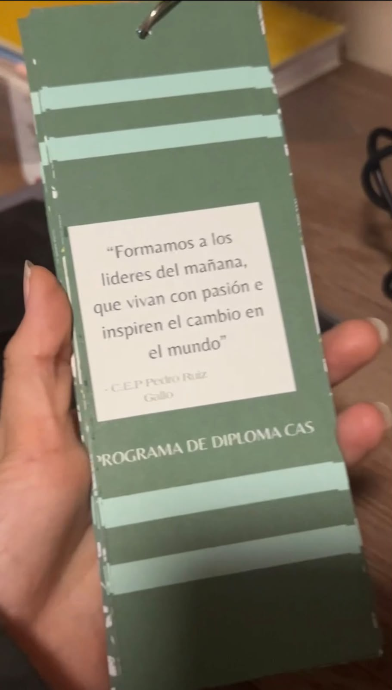
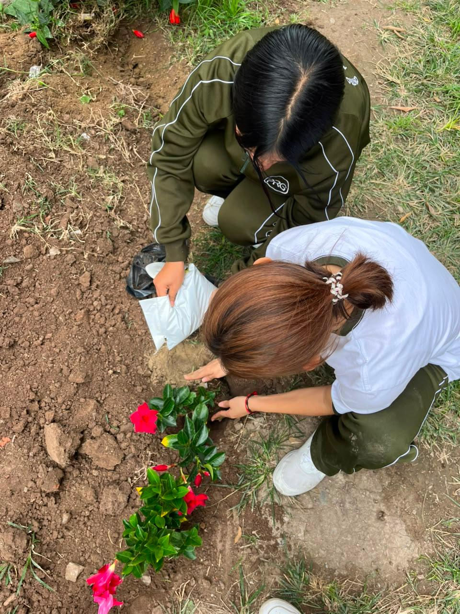
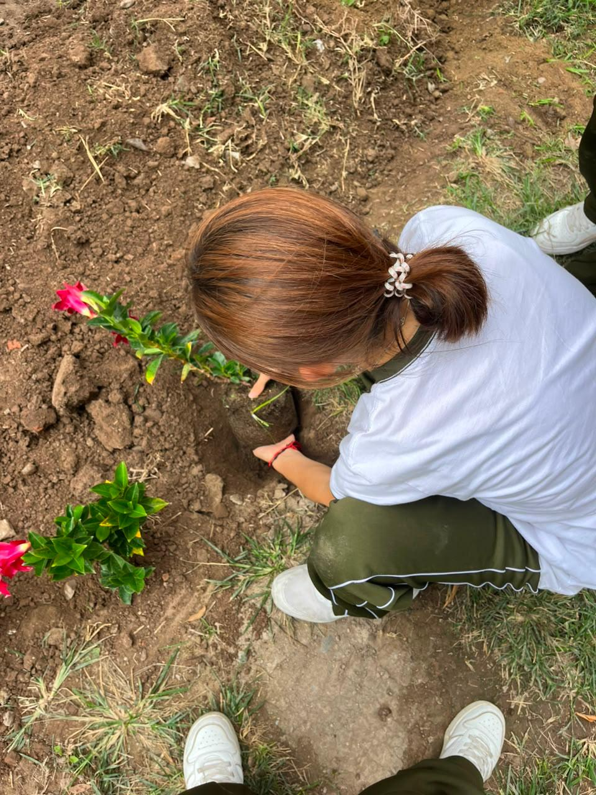
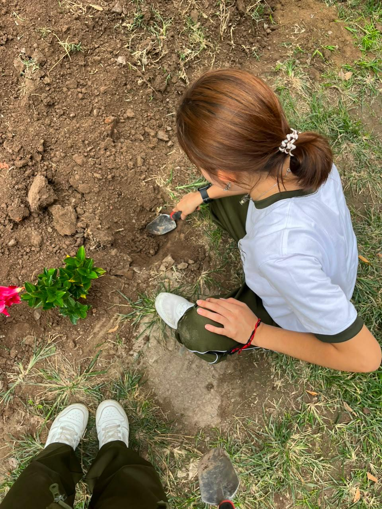
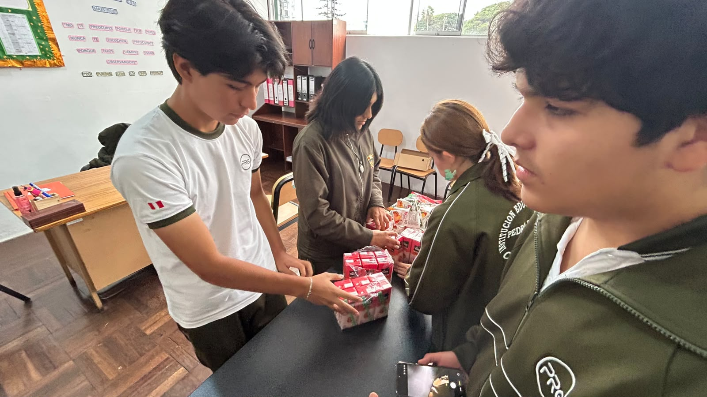
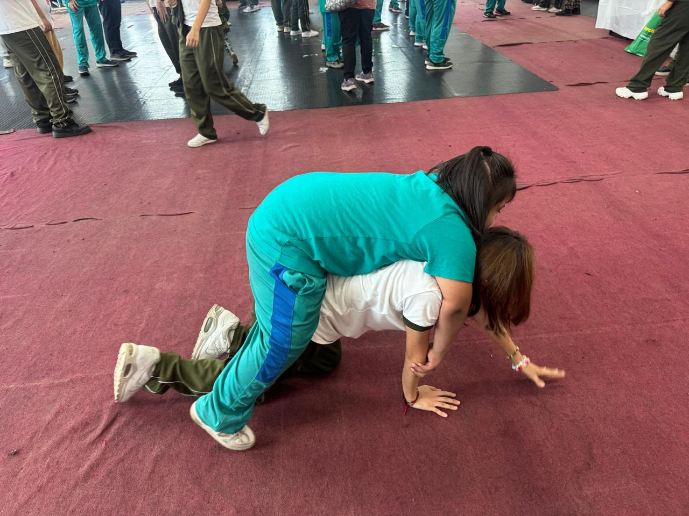
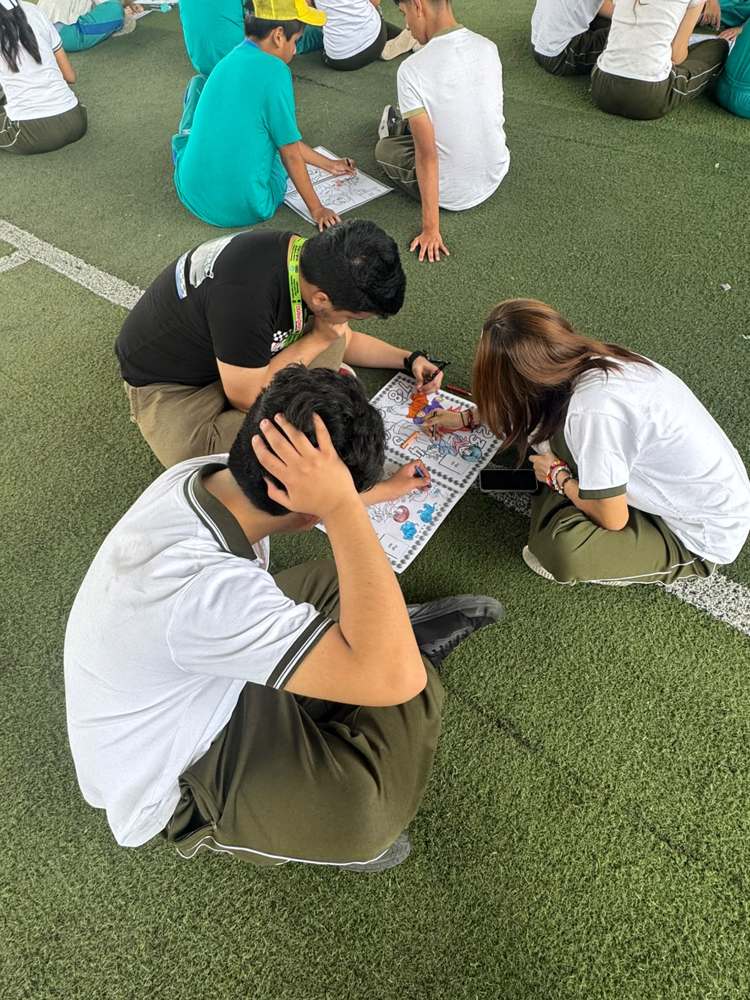
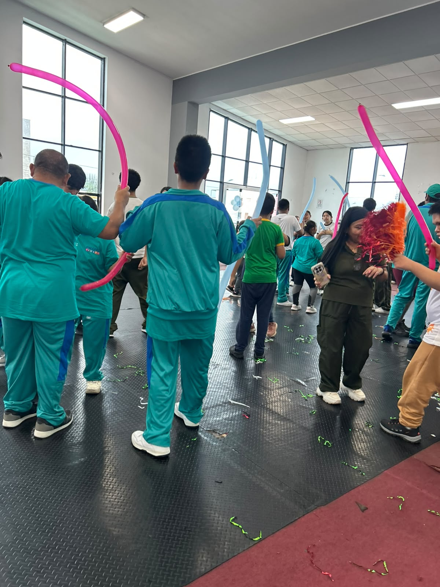

▶ 1. Experiencia CAS - Integracion

El evento de integración entre alumnos de 4to y 5to fue mi primera experiencia CAS como estudiante del DP1 y me sirvió como introducción a la comunidad más allá de mi propio grado. El objetivo principal del evento era fomentar la interacción, el trabajo en equipo y el sentido de pertenencia a través de una serie de juegos y actividades grupales. Esta actividad se vincula principalmente con el área de CAS: Actividad, ya que implicó participación física y dinámica, y con CAS: Servicio, al promover la integración y el apoyo entre estudiantes de diferentes promociones.
Durante todo el evento, el ambiente fue enérgico y dinámico, lo que ayudó a reducir la incomodidad y facilitó la interacción con los demás. Participar en los diferentes juegos requirió cooperación y adaptabilidad, ya que muchos trabajábamos con personas con las que nunca habíamos hablado antes. Si bien algunas actividades fueron divertidas, otras me sacaron de mi zona de confort. El juego de los zapatos, en particular, fue una experiencia desagradable debido al olor, y me disgustó mucho. Sin embargo, el hecho de haber decidido participar a pesar de esto me demostró la importancia del compromiso y la implicación, incluso cuando una actividad es incómoda o no resulta del agrado personal.
 Un aspecto significativo del evento fue conocer a mis padrinos asignados. Fueron amables y accesibles, y su actitud hizo que la experiencia fuera de apoyo en lugar de abrumadora. Aunque no he mantenido un contacto constante con ellos, saber que estaban dispuestos a ofrecer orientación y consejos sobre el PD me tranquilizó. Sus sugerencias me ayudaron a sentirme más preparada y menos ansiosa ante los retos del DP1.
A partir de esta experiencia, se desarrollaron varios resultados de aprendizaje de CAS, especialmente el de afrontar nuevos desafíos, al participar activamente en actividades que me resultaron incómodas, y el de trabajar de forma colaborativa con otros, al interactuar con estudiantes de otro grado. Asimismo, la actividad contribuyó al desarrollo de habilidades sociales y de comunicación, como la escucha activa, la cooperación y la adaptación a nuevas dinámicas de grupo.
En cuanto a los atributos del IB, esta experiencia me permitió fortalecer principalmente los atributos de audaz, al salir de mi zona de confort; comunicadora, al interactuar con personas nuevas; y solidaria, al formar parte de una actividad que buscaba integrar y apoyar a otros dentro de la comunidad escolar.
En general, el evento de integración cumplió su objetivo de fomentar la colaboración y el sentido de pertenencia, convirtiéndose en un punto de partida significativo para mi trayectoria en CAS, incluso si algunas partes fueron… traumáticas de cierta forma ૮(˶ㅠ︿ㅠ)ა
Un aspecto significativo del evento fue conocer a mis padrinos asignados. Fueron amables y accesibles, y su actitud hizo que la experiencia fuera de apoyo en lugar de abrumadora. Aunque no he mantenido un contacto constante con ellos, saber que estaban dispuestos a ofrecer orientación y consejos sobre el PD me tranquilizó. Sus sugerencias me ayudaron a sentirme más preparada y menos ansiosa ante los retos del DP1.
A partir de esta experiencia, se desarrollaron varios resultados de aprendizaje de CAS, especialmente el de afrontar nuevos desafíos, al participar activamente en actividades que me resultaron incómodas, y el de trabajar de forma colaborativa con otros, al interactuar con estudiantes de otro grado. Asimismo, la actividad contribuyó al desarrollo de habilidades sociales y de comunicación, como la escucha activa, la cooperación y la adaptación a nuevas dinámicas de grupo.
En cuanto a los atributos del IB, esta experiencia me permitió fortalecer principalmente los atributos de audaz, al salir de mi zona de confort; comunicadora, al interactuar con personas nuevas; y solidaria, al formar parte de una actividad que buscaba integrar y apoyar a otros dentro de la comunidad escolar.
En general, el evento de integración cumplió su objetivo de fomentar la colaboración y el sentido de pertenencia, convirtiéndose en un punto de partida significativo para mi trayectoria en CAS, incluso si algunas partes fueron… traumáticas de cierta forma ૮(˶ㅠ︿ㅠ)ა

▶ Ver imagenes


▶ 2. Proyecto CAS - Kiosco Solidario y Saludable
▶ Dɪᴀ 1 (ᐢ˙꒳˙ᐢ)
El primer día del kiosco llegamos temprano para organizarnos antes de que empezara todo. Yo me encargué de descargar el cooler, ya que llevé gelatinas y gelatinas con espuma para vender. Desde el inicio, el día fue bastante bueno, tanto que terminamos generando alrededor de 240 soles, convirtiéndose en uno de nuestros mejores días de ventas. El equipo de MIX & MUNCH (nuestro nombre de kiosco) estaba conformado por Martín, Catarina, Avril y yo, y desde el comienzo se sintió una dinámica muy cómoda. Nos llevábamos bien, trabajábamos bien juntos y eso hizo que todo fluyera de manera más natural. Además, nuestro kiosco estaba tematizado con avatares que habíamos hecho de cada uno, lo que le dio un toque más personal y especial al proyecto, generando una conexión emocional con el espacio y con el trabajo que estábamos realizando. Para organizarnos mejor, decidimos tomarnos exactamente veinte minutos de la mañana (con todo y timer) para preparar el kiosco antes del inicio del día. Esta decisión nos ayudó bastante, ya que nos permitió estar listos con tiempo y evitar el estrés de última hora. Durante el recreo, intentamos mantener un ambiente alegre y cercano, usando vinchas de colores y haciendo que la experiencia fuera más amena tanto para nosotros como para quienes compraban. Sin embargo, a nivel personal, no empecé el día del todo bien. Algunos problemas con el Excel me generaron bastante estrés desde la mañana y no me sentía completamente cómoda. Esto afectó mi ánimo y, en un momento, siento que levanté la voz, algo que reconozco que no fue la mejor forma de manejar la situación. Esta experiencia me hizo darme cuenta de cómo el estrés puede influir en la forma en la que me comunico y en cómo reacciono frente a los demás. A pesar de eso, el día terminó de manera positiva. Logramos vender casi todos los productos y llegamos a hacer sold out de los brownies, que tuvieron muy buena aceptación. Hubo un pequeño problema con uno de ellos, pero logramos solucionarlo sin mayores complicaciones. En general, el primer día cerró bien y dejó una buena base para el resto de la semana.
▶ Dɪᴀ 2 ꒰✿´ ꒳ ` ꒱
El segundo día fue distinto para mí, ya que no me tocaba estar en el kiosco. Decidí tomarme ese día para descansar y recuperar energía, algo que también era necesario después del primer día. Aun así, no me desconecté completamente de la actividad. Durante el segundo y el tercer recreo pasé a ver cómo les estaba yendo a mis compañeros. En el tercer recreo surgió un pequeño problema relacionado con la organización de la caja, ya que hubo una confusión sobre si podían turnarse o no. Finalmente, nos dimos cuenta de que lo más práctico era que una sola persona se encargara de la caja de manera constante, por lo que decidimos volver a ese sistema. El problema se resolvió rápidamente y sin mayores complicaciones. Ese día se logró el sold out de tres productos y, en general, las ventas fueron bastante buenas. Aunque no estuve directamente atendiendo, aproveché el tiempo para observar qué productos eran los más pedidos y qué buscaban más los clientes. Esta observación fue útil, ya que nos permitió tener una mejor idea de cómo organizarnos y qué priorizar en los días siguientes. En general, el segundo día fue un día de descanso para mí, pero también de aprendizaje desde otro rol, lo que me ayudó a aportar de una forma diferente al trabajo del equipo.
▶ Dɪᴀ 3 ૮₍ˆ꜆･⩊-₎ა
El tercer día empezó con algo de confusión, ya que pensábamos que iba a haber una inspección. Debido a que nos avisaron a última hora el día anterior, decidimos no llevar algunos de los productos que solían ser los más populares, como la pizza. Esto hizo que el día comenzara con cierta incertidumbre sobre cómo nos iba a ir. A pesar de eso, logramos vender bien otros productos. La fruta picada fue el producto más exitoso del día, junto con la gelatina. Estos productos funcionaron especialmente bien cuando los ofrecimos a los profesores, algo que personalmente disfruté muchísimo. Fue un miércoles muy agradable, y la experiencia de ir a vender directamente a los profesores fue una de las partes que más me gustaron de toda la semana. Hacer esta venta junto con mi compañero Martín fue muy positivo, ya que tenemos buena química y nos comunicamos bien. El hecho de poder acercarnos, conversar y ofrecer los productos de manera directa hizo que el ambiente fuera muy ameno y que la experiencia resultara divertida y natural. Para mí, esta parte del día fue definitivamente un 10 de 10. Aunque ese día no llegamos a hacer sold out de ningún producto, las ventas fueron buenas, alcanzando aproximadamente 191 soles, según el conteo de caja. En general, el día terminó siendo mejor de lo que esperábamos, incluso con los cambios y las limitaciones que tuvimos al inicio.
▶ Dɪᴀ 4 (๑˃̵ᴗ˂̵)و
El jueves fue un día bastante movido. No recuerdo todos los detalles con exactitud, pero sí tengo fotos y me acuerdo claramente de que hicimos un restock de gelatina con espuma, ya que se había convertido en el producto más pedido. Literalmente todos querían gelatina con espuma, así que, debido a la alta demanda, decidimos traer más para nuestro penúltimo día. La decisión funcionó muy bien y ese producto volvió a tener buena acogida. Ese día también estuve nuevamente en el kiosco, ya que pensábamos que iba a haber una inspección. Habíamos quedado en que Martín, Catalina y yo estaríamos presentes, así que me mantuve en el kiosco, aunque también estuve rotando y yendo a ofrecer productos a los profesores, como en días anteriores. Aun así, decidí tomarme algunos recreos fuera para descansar un poco y permitir que mis compañeras también pudieran trabajar con tranquilidad. Siento que, dentro de todo, fue un día en el que logré descansar un poco más, especialmente durante el tercer recreo, en el que no estuve tanto tiempo en el kiosco. Ese descanso me ayudó a no sentirme tan agotada y a manejar mejor el resto del día. Al final de la jornada, me llevé el dinero a casa para hacer el conteo, incluyendo los pagos por Yape. Además, decidí hacer una pequeña donación personal a la cuenta del kiosco, como aporte al trabajo que estábamos realizando como equipo. Ese día también tuvimos un pequeño problema con las cucharas, ya que no logré conseguirlas a tiempo. Afortunadamente, la miss nos ayudó trayendo cucharas y, durante esos días, también se encargó de enrollarlas en las servilletas. Realmente le agradezco mucho su apoyo, ya que su ayuda fue clave para que todo pudiera seguir funcionando sin problemas.
▶ Dɪᴀ 5 ˊ̥̥̥̥̥ Ⱉ ˋ̥̥̥̥̥
El último día del kiosco fue muy emotivo para todos. Desde la mañana se sentía que era el cierre de algo importante: estábamos felices por haber llegado al final, pero también un poco tristes porque ya se terminaba. Nuestro kiosco estaba completamente tematizado con los avatares que habíamos hecho (los Miis), y ver todo armado por última vez fue muy especial. Durante el día estuvimos tomando fotos y disfrutando más el momento. Al final, cuando ya estábamos cerrando el kiosco, nos tomamos varias fotos juntos, en un ambiente muy cómodo y tranquilo. Personalmente, le tomé mucho cariño al equipo, y eso hizo que el cierre se sintiera aún más significativo. Ese día almorzamos dentro del kiosco y nos quedamos conversando con algunos clientes que se acercaban. Como era viernes y ya no había tanta gente, el ambiente fue mucho más relajado y ameno. Estuvimos Naomi, Catalina, Avril, Martín y yo, rotando en las tareas, hablando, comiendo y disfrutando del último día juntos en el kiosco. Al final, grabamos un video mientras sacábamos las cosas del kiosco y tomamos muchas fotos más. Nos encariñamos tanto con los muñequitos del kiosco que decidimos pegarlos en nuestros lockers como recuerdo de esta experiencia. Fue un gesto pequeño, pero con mucho significado. En general, el último día fue muy tranquilo. Me sentí en paz y satisfecha con todo lo que habíamos vivido durante la semana, y creo que fue un muy buen cierre para esta experiencia de CAS.
▶ Ver imagenes


▶ 3. Proyecto CAS - Souveniers de aniversario del colegio
▶ Dɪᴀ 1 (ᴊᴜᴇᴠᴇs)
Este día fue principalmente de planificación y diseño. Nos organizamos bien desde el inicio: definimos qué íbamos a hacer, cómo se verían los separadores y qué materiales necesitamos. Me gustó que el grupo estuvo abierto a ideas nuevas y que supimos organizarnos rápido, lo cual ayudó a que el proyecto arrancará bien y sin confusiones.
▶ Dɪᴀ 2 (ᴠɪᴇʀɴᴇs ᴀ ᴅᴏᴍɪɴɢᴏ)
Durante estos días trabajé en la impresión y preparación de los separadores en cartulina. Esta parte tomó más tiempo de lo que esperaba, especialmente porque eran muchas impresiones y además me di cuenta de que no tenía suficientes hojas. Esto me hizo darme cuenta de que, aunque habíamos planificado bien al inicio, todavía nos faltaba prever mejor los materiales necesarios para no atrasarnos.
▶ Dɪᴀ 3 (ʟᴜɴᴇs ᴀ ᴍᴀʀᴛᴇs)
En estos días se realizó el armado final de los separadores con la cola de rata. Aquí aparecieron varios problemas: no llegaron los lapiceros y, para empeorar un poco la situación, me olvidé los 30 separadores en mi casa, lo que retrasó la entrega. Fue un momento estresante, pero también me ayudó a aprender a manejar errores, asumir responsabilidades y buscar soluciones sin rendirme.
▶ Dɪᴀ 4 (ᴍɪᴇʀᴄᴏʟᴇs)
Finalmente se realizó la entrega del proyecto en el colegio. Tuvimos complicaciones ya que 2 compañeros no llegaron con los souvenirs a tiempo para cuando ya habíamos entregado el trabajo. Logramos completar el producto final con los separadores elaborados y los lapiceros que nos dio el otro grupo. Aunque no todo salió exactamente como lo habíamos planeado, el proyecto se entregó y cumplió su objetivo. Este día me dejó la sensación de alivio y aprendizaje, entendiendo que los errores también forman parte del proceso.
▶ Reflexión general
El proyecto permitió comprender la importancia de la organización, la comunicación y la flexibilidad durante el desarrollo de una experiencia CAS. Desde la planificación original de los separadores, los cuales fueron principalmente diseñados por Enrique Estrada, Anadayeli Dionicio y Bianca Ramirez, este diseño incluía frases alegóricas en relación al colegio, estos fueron impresos en cartulina y tenían cola de rata en la esquina. A pesar de los imprevistos y retrasos, los cuales se dieron más que todo en el día de la entrega, pudimos escucharnos, adaptarnos y encontrar soluciones sin perder de vista el propósito del proyecto. Se logró cumplir con el objetivo final mediante el trabajo en equipo y la búsqueda de soluciones responsables, fortaleciendo valores como la responsabilidad, el compromiso y el respeto por las ideas de los demás. Logramos cumplir el diseño de forma media satisfactoria, más que todo por el hecho que nos faltó lapiceros. Esta experiencia permitió potenciar habilidades personales y sociales, dejando aprendizajes significativos para futuros proyectos CAS.
▶ Ver imagenes


▶ 4. Experiencia CAS - Biohuerto
En esta experiencia aportamos al proyecto del huerto escolar que el colegio está implementando. Nos tocó plantar plantas de malvariscos. Para hacerlo, varias compañeras nos organizamos y nos juntamos para comprarlas todas juntas, ya que así nos salía más barato. Luego las llevamos al salón para trabajar con ellas. Ese día fue muy lindo; la experiencia en general fue muy agradable porque estuvimos todos juntos participando. Las chicas y los chicos se separaron por grupos: los chicos se encargaron de mejorar el terreno de las esquinas, mientras que nosotras nos encargamos de plantar en otra zona del huerto. Personalmente, ayudé quitando la tierra y plantando, y planté dos malvariscos. Nos turnamos entre todas para que cada una pudiera tener al menos una planta y vivir su propia experiencia. Después de plantar, usamos palitas para acomodar y arreglar un poco la tierra. La verdad es que me pareció una experiencia muy linda porque, de cierta forma, casi todos sabemos que el área del huerto del colegio necesita mejoras. Es un espacio que se ha visto afectado por la contaminación generada, principalmente, por los mismos alumnos. Por eso, tener un proyecto que busque arreglar y mejorar este lugar nos hizo sentir, como alumnas de PD, satisfechas y contentas al poder contribuir a que ese espacio sea poco a poco más bonito y menos sucio. Creo que nuestro trabajo valió la pena, ya que permite ver el progreso y pensar en cómo quedará nuestro colegio en el futuro. Además, este huerto tendrá un impacto mayor, porque sabemos que los chicos de PAI van a realizar una feria gastronómica utilizando productos que se van a plantar en este mismo huerto. De esta manera, estamos aportando a un proyecto escolar grande que no solo nos beneficia a nosotros, sino a toda la comunidad educativa y a las personas que participen comprando los productos gastronómicos.
▶ Ver imagenes



▶ 5. Proyecto CAS - OMAPED
▶ Fundamentos
Este proyecto CAS se desarrolla en la OMAPED, un espacio destinado a brindar atención, acompañamiento y actividades para niños y personas con discapacidad. La experiencia busca acercarnos a una realidad diferente a la que vivimos cotidianamente y permitirnos participar de manera activa en un espacio de convivencia, juego y aprendizaje.
Considero que este proyecto es especialmente significativo porque el servicio no consiste únicamente en realizar una actividad para otras personas, sino en compartir tiempo con ellas, observar sus necesidades, adaptarnos a sus formas de comunicación e interacción y aprender a valorar las diferencias. A través de los juegos, el arte y la convivencia, podemos contribuir a generar un ambiente en el que los niños se sientan acompañados, escuchados e incluidos.
▶ Objetivos
- Participar activamente en actividades de integración y recreación junto con los niños de la OMAPED.
- Promover espacios de inclusión, acompañamiento y convivencia mediante juegos y actividades creativas.
- Desarrollar habilidades de comunicación, empatía, adaptación y trabajo colaborativo.
- Comprender mejor las distintas realidades y formas de interacción de las personas con discapacidad.
- Reflexionar sobre la importancia del servicio y sobre el impacto que puede tener dedicar tiempo y atención a otras personas.
▶ SESIÓN 1 - 13 de agosto
Fecha: 13 de agosto de 2026
Tiempo: Jornada de visita y actividades recreativas en la OMAPED.
Acciones: Participamos en diferentes juegos y actividades de interacción. En mi grupo llevamos tarjetas de póker, chapitas y tarjetas de UNO para utilizarlas como materiales de juego. Durante la actividad estuvimos principalmente con un grupo de aproximadamente tres niños, con quienes jugamos utilizando las tarjetas y las chapitas. Posteriormente, una niña comenzó a guiarnos y a llevarnos de un lugar a otro, por lo que pasamos gran parte de la jornada jugando y compartiendo con ella. Para finalizar, participamos en un momento de baile junto con los demás.
Trabajo: Mi trabajo consistió principalmente en participar activamente en los juegos, acompañar a los niños y adaptarme a las dinámicas que ellos proponían. Más que dirigir una actividad de manera rígida, fue importante seguir su ritmo, prestar atención a sus reacciones y buscar formas de mantener la interacción de manera natural.
Esta primera sesión me permitió comprender que una experiencia de servicio no siempre necesita una actividad compleja para ser significativa. Compartir un juego, seguir a una niña mientras nos mostraba diferentes lugares o simplemente bailar también puede convertirse en una forma de acompañamiento. Al principio podía existir cierta incertidumbre sobre cómo interactuar, especialmente porque era una realidad con la que no estoy acostumbrada a convivir diariamente. Sin embargo, al involucrarme directamente, esa distancia fue disminuyendo.
También comprendí que las situaciones pueden cambiar mucho dependiendo de cada persona. No todos los niños interactuaban de la misma manera ni tenían los mismos intereses, por lo que tuvimos que ser flexibles. Esta experiencia me ayudó a salir de mi zona de confort y a entender que la inclusión requiere disposición para escuchar, observar y adaptarse, en lugar de asumir que sabemos qué necesita otra persona.
▶ SESIÓN 2
Fecha: Segunda sesión del proyecto.
Tiempo: Jornada de actividades recreativas y creativas en la cancha de fútbol.
Acciones: En esta sesión cambiamos de ambiente y trabajamos principalmente en la cancha de fútbol. Realizamos actividades de coloreado durante gran parte de la jornada y posteriormente utilizamos la pelota para realizar juegos y actividades físicas.
Trabajo: Participé en las actividades de coloreado, acompañando a los niños mientras realizaban sus trabajos y compartiendo el espacio con ellos. Después participé en los juegos con la pelota, adaptándome nuevamente a las diferentes formas en que cada niño quería participar.
El cambio de ambiente hizo que la experiencia se sintiera diferente a la primera sesión. Tener un espacio más amplio permitió realizar actividades que combinaban creatividad y movimiento. Esto me hizo notar que el entorno también puede influir en la forma en que las personas participan: algunas actividades permiten una interacción más tranquila, mientras que otras generan más movimiento y espontaneidad.
La sesión también reforzó la importancia de no entender el servicio como algo unilateral. Mientras nosotros llevábamos actividades y materiales, también estábamos aprendiendo de las personas con quienes compartíamos. Fue una oportunidad para observar diferentes maneras de expresarse, respetar sus ritmos y comprender que participar no significa necesariamente hacer todos lo mismo, sino encontrar maneras de incluir a cada persona.
▶ Reflexión Grupal
Como grupo, consideramos que las visitas a la OMAPED nos permitieron acercarnos a una realidad que muchas veces puede ser desconocida para quienes no tienen contacto frecuente con personas con discapacidad. Al compartir juegos, realizar actividades creativas y participar en momentos de recreación, entendimos que la inclusión se construye principalmente mediante la convivencia y la disposición a interactuar con los demás.
También aprendimos que una actividad puede no desarrollarse exactamente como la habíamos imaginado y aun así cumplir un propósito importante. Tuvimos que adaptarnos a los intereses, ritmos y formas de interacción de los niños, lo que hizo necesario comunicarnos entre nosotros y apoyarnos como equipo. La experiencia nos permitió valorar el servicio desde una perspectiva más humana: no se trataba solamente de "ayudar", sino de compartir, escuchar y crear un espacio agradable para todos.
▶ Reflexión personal
Personalmente, considero que esta experiencia fue una de las que más me hizo reflexionar sobre el significado del servicio. Antes de ir, podía pensar en la actividad principalmente como una oportunidad para realizar juegos y pasar tiempo con los niños. Sin embargo, al estar allí comprendí que el aprendizaje iba mucho más allá de la actividad que llevábamos preparada.
Interactuar con personas con realidades diferentes a la mía me hizo cuestionar algunas ideas que podía tener sobre cómo debía desarrollarse una actividad. La experiencia me enseñó que no siempre debemos esperar que los demás se adapten a nuestra forma de hacer las cosas; también debemos aprender a adaptarnos nosotros. Seguir el ritmo de una niña que quería llevarnos de un lugar a otro, cambiar entre juegos, colorear o simplemente participar en un momento de baile fueron pequeñas situaciones que me ayudaron a entenderlo.
Esta experiencia también fortaleció mi empatía y mi capacidad de observación. Tuve que prestar más atención a las expresiones, reacciones y preferencias de los niños para saber cómo interactuar con ellos de una manera respetuosa. Además, trabajar con mis compañeros me permitió comunicarme mejor y colaborar para que todos pudiéramos participar.
Áreas CAS:
- Servicio: Es el área principal, ya que la experiencia estuvo orientada a compartir tiempo, acompañar y contribuir al bienestar y la inclusión de los niños de la OMAPED.
- Actividad: Estuvo presente mediante los juegos, el baile, las actividades con pelota y el movimiento realizado durante las sesiones.
- Creatividad: Se desarrolló especialmente durante las actividades de coloreado y al buscar diferentes maneras de convertir materiales sencillos en oportunidades de juego e interacción.
Habilidades desarrolladas:
- Comunicación: Aprendí a comunicarme de diferentes maneras y a prestar atención a las respuestas de los demás.
- Empatía: Fortalecí mi capacidad de comprender y respetar experiencias y necesidades diferentes a las propias.
- Adaptabilidad: Tuve que modificar mi forma de participar dependiendo de cada niño y de cómo evolucionaba la actividad.
- Trabajo en equipo: Colaboré con mis compañeros para mantener las actividades y acompañar a los niños.
- Observación: Aprendí a fijarme más en las reacciones y preferencias de los niños para saber cómo acercarme y participar.
Resultados de aprendizaje de CAS relacionados:
- Identificar fortalezas y desarrollar áreas de crecimiento personal.
- Demostrar que se han afrontado desafíos y desarrollado nuevas habilidades durante el proceso.
- Demostrar habilidades de trabajo colaborativo y reconocer los beneficios del trabajo en equipo.
- Mostrar compromiso y perseverancia en experiencias de CAS.
- Reconocer y considerar la ética de las decisiones y acciones realizadas durante la experiencia.
▶ Evidencias



